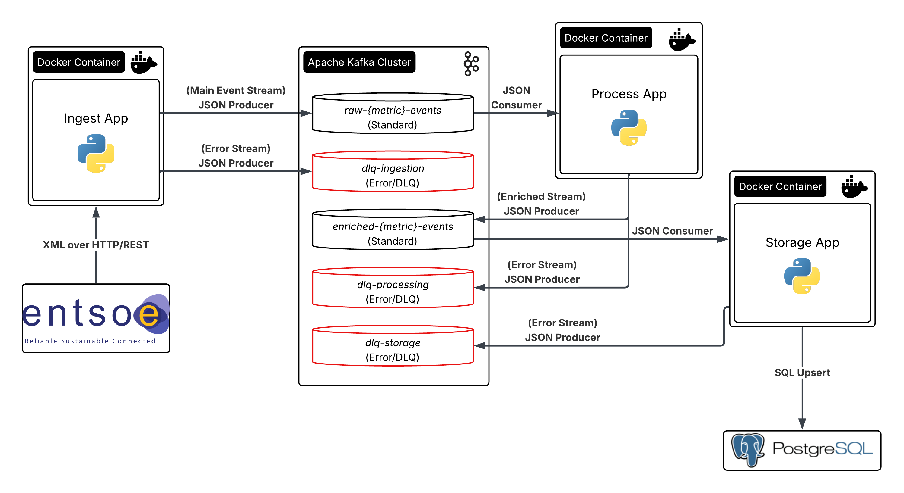

Tech Stack & Environment Overview
The system is engineered as a collection of isolated microservices interacting asynchronously over a distributed log backbone. By segregating ingestion, stateless processing, and persistence into discrete runtimes, the architecture achieves greater fault tolerance and horizontal scalability.
| Component Layer | Technology | Strategic Architectural Role |
|---|---|---|
| Core Runtime Engine | Python 3.10-slim | Provides lightweight, isolated container environments for each execution worker. |
| Event Streaming Backbone | Apache Kafka (Confluent Cloud) | Acts as the central message broker, enabling decoupled, asynchronous event streaming and message buffering between services. |
| Database & Persistence Tier | Relational Database (PostgreSQL Instance) | Provides transactional storage for structured time-series grid data. |
| Data Contract & Validation | Pydantic v2 | Enforces data validation and type-safety across all microservice communication channels. |
| Infrastructure Orchestration | Docker & Docker Compose | Orchestrates network isolation and ensures identical local and production environments. |
Data Lifecycle & Stream Transformations
Data flows linearly through a series of decoupled microservices, transforming from raw, unstructured external data into enriched, structured time-series indices.
1. Ingestion Layer (Ingest App)
The system initiates data capture through an orchestration layer that triggers polling on a fixed cyclical schedule. The application establishes secure connections to the external ENTSO-E REST API via an egress wrapper resilient to network timeouts.
Because the upstream data provider represents grid metrics in varied XML formats, the ingest app utilises an abstract parser. It standardises various reporting layouts into a single validated structure. Once validated, the payloads are serialised as raw JSON and sent to the Kafka message broker.
2. Stateless Compute & Enrichment Layer (Process App)
The process app operates as a streaming worker that consumes raw events from Kafka independently of the ingestion layer. It performs three main transformations:
- Spatial Mapping: Maps alphanumeric Energy Identification Codes (EICs) to human-readable bidding zones and country data using internal configurations.
- Carbon Intensity Tracking: Matches energy generation types with emission data to calculate the real-time carbon output (kgCO₂e/MWh) for each grid zone.
- Temporal Standardization: Normalizes different reporting intervals (such as mixed 30-minute and 60-minute windows) into a uniform 15-minute grid by dividing and distributing metrics across standard time slices.
Enriched events are then published back to Kafka on separate downstream topics.
3. Asynchronous Persistence Layer (Storage App)
The storage app acts as an isolated database sink, consuming messages from the enriched Kafka topics. To optimize throughput and reduce connection overhead on the relational database, it groups incoming records into batches before executing bulk database inserts. This decouples the streaming pipeline from database latency and ensures stable data throughput.
Fault Tolerance & Isolation Policy
The pipeline ensures high availability by maintaining stateless workers and isolating errors so they do not disrupt the rest of the stream.
Stateless Design & Graceful Shutdown
All applications are completely stateless, relying on Kafka to manage offsets and consumer state. If a container fails, a new instance can immediately take over without risking data loss or state corruption.
During deployments, workers catch shutdown signals to safely complete active processes, flush in-memory queues, and commit consumer offsets before exiting.
Dead Letter Queue (DLQ) Architecture
Instead of crashing or blocking the pipeline when encountering unexpected errors or malformed data, the system routes failed messages to separate dead letter topics for isolated troubleshooting:
- dlq-ingestion: Catches API timeouts or structural changes during ingestion, saving the request metadata for future historical backfills.
- dlq-processing: Isolates validation failures or unmapped data codes (such as an unknown asset type or zone identifier) discovered during processing.
- dlq-storage: Captures errors that occur right before database insertion. It encodes the raw payload in Base64 so it can be safely written to the DLQ for debugging without violating structural data contracts.
Temporal Resilience & Idempotency Strategy
Real-time grid telemetry is often delayed, updated retroactively, or revised out of order by regional operators. The pipeline uses two mechanisms to guarantee final data correctness.
Overlapping Lookback Windows
Since operators rarely publish complete grid data immediately, the ingest layer runs overlapping queries to catch missing data gaps:
- Hourly Lookbacks: Each hourly run queries a trailing 3-hour window to catch late-arriving metrics from lagging operators.
- Daily Deep Backfills: A 72-hour sliding lookback window runs once a day to capture audited updates and retroactive corrections.
Database-Level Idempotency
Because lookback windows intentionally introduce highly redundant data streams, the database enforces unique composite keys based on the zone code, metric type, and timestamp. Write operations handle conflicts by safely ignoring exact duplicates while allowing updated historical records to be refreshed.
This ensures data integrity and prevents duplicate entries.